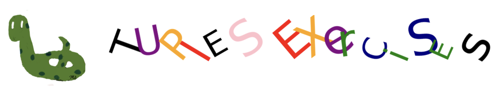

Tuples Exercises#

Question-1#
Create a tuple containing numbers greater than 5 from the given tuple below using a for loop.
mytuple = (3, 6, 2, 1.89, 1, 9, 5.5, 5, 7, 8, 1, -3, -5, 10.3)
Question-2#
Create a tuple containing numbers greater than 5 from the given tuple below using a for loop.
mytuple = (3, 6, 2, 1.89, 'h', 1, 9, 5.5, 5, 7, 8, True, 1, -3, -5, 'USA', 10.3, 'France')
Question-3#
Create a tuple by combining elements from the following tuples, one by one using a for loop.
numbers = (1,2,3,4,5)
letters = ('a', 'b', 'c', 'd', 'e')
The output should be (1, ‘a’, 2, ‘b’, 3, ‘c’, 4, ‘d’, 5, ‘e’)
Question-4: Scatterplot#
There are 5 houses in a specific area, each described by tuples containing their x and y coordinates, colors, sizes, and the names of the owners.
Use a for loop to plot each house individually, displaying the first characters of the owners’ names next to their respective houses.
Refer to the scatterplot section in Chapter-13: Visualization for implementation guidance.
x_tuple = (1, 5, 8, 3, 9)
y_tuple = (7, 1, 9, 5, 3)
color_tuple = ('green', 'red', 'orange', 'navy', 'pink')
size_tuple = (250, 50, 200, 100, 175)
name_tuple = ('Michael', 'Tim', 'Jennifer', 'Liz', 'Frank')
Question-5: Barplot#
Ask the user to enter as many numbers as they want.
Store these numbers in a tuple.
Warn the user if a non-numeric value is entered.
Use a while loop and try-except.
Calculate the count, mean, median, standard deviation, maximum, and minimum values of the entered numbers.
Visualize these values using a bar graph.
Refer to the barplot section in Chapter-13: Visualization for implementation guidance.
Sample Output
Enter a number or type Q to quit. 3
Enter a number or type Q to quit. 7
Enter a number or type Q to quit. 2
Enter a number or type Q to quit. 9
Enter a number or type Q to quit. w
Please enter a numerical value!
Enter a number or type Q to quit. 4
Enter a number or type Q to quit. Q
Numbers: (3.0, 7.0, 2.0, 9.0, 4.0)
add your BARPLOT here.
Question-6#
Create a tuple with the elements: \(2, 8, 4, 8, 4, 10, 4\) and print the following information about this tuple:
The number of occurrences of 10.
The element at index 4.
The second element.
The index of the first occurrence of 4.
The index of the second occurrence of 4.
The index of the third occurrence of 4.
The length (number of elements) of the tuple.
The maximum, minimum, and the sum of the elements.
The last two elements using slicing.
The first three elements using slicing.
Question-7#
Find the average exam result for the 9th graders among the provided grade levels and exam results using a for loop.
grade_level = ( 9, 9, 10, 11, 10, 10, 9, 10, 11, 11, 10, 11, 9, 11, 11, 9, 10, 10, 10, 10)
exam_result = (59, 20, 81, 30, 62, 56, 85, 72, 48, 15, 47, 18, 11, 37, 79, 87, 79, 92, 82, 66)
Question-8#
For the given tuple below, print the elements that are strings, have at least 4 characters, and end with ‘r’.
mytuple = ( 'table', 'chair', 'desk', 'pen', 5, 7, 8, 'pencil', 'eraser', True, 'ruler', 'car')
Question-9: Accuracy Score#
The following two tuples represent the actual and predicted test scores (Positive/Negative) for some samples.
actual = ('P', 'N','N', 'N', 'P', 'P','P', 'N', 'P', 'P', 'N', 'P', 'N', 'N', 'P', 'P', 'N', 'P','N', 'P', 'P')
prediction = ('N', 'N','P', 'N', 'P', 'N','N', 'N', 'P', 'P', 'P', 'P', 'P', 'N', 'P', 'P', 'N', 'P','N', 'N', 'P')
Compute the accuracy score for the predicted values, which is the ratio of correctly classified samples to the total number of samples.
Business Applications#
Question: Production Data Analysis#
The following two tuples represent the annual production and the corresponding years for a company over a 10-year period.
production = (3000, 2500, 5000, 4750, 2250, 6300, 8000, 7500, 9000, 8700)
years = (2012, 2013, 2014, 2015, 2016, 2017, 2018, 2019, 2020, 2021)
Calculate the total, average, and highest production using methods from numpy.
Determine the year with the highest production using the index() method.
Question: Profit and Loss#
The following three tuples represent the revenue, cost, and the corresponding years for a company over a 10-year period.
revenue = (2000, 4500, 5000, 6000, 3000, 4000, 8000, 2000, 6000, 3000)
cost = (2500, 3500, 3750, 4500, 4000, 3500, 4500, 3000, 4500, 4000)
years = (2012, 2013, 2014, 2015, 2016, 2017, 2018, 2019, 2020, 2021)
Calculate the total profit and total loss.
Create a tuple consisting of the years when the company lost money.
Determine the overall profit during these 10 years
Question: Total Cost#
The following tuple represents the unit price-quantity pairs for various items. Write a program that computes the total cost using a for loop.
price_quantity = ((8 dollars, 100 items), (4 dollars, 300 items), (23 dollars, 150 items), (89 dollars, 75 items))
Question: Stock Symbols#
Given the following tuple containing stock symbols, write a program that returns a new tuple with the following modifications:
Remove duplicate stock symbols while preserving the original order.
Replace any ‘.’ characters in the symbols with ‘-’ characters.
symbols = ['MMM', 'BF.B', 'CAT', 'AMZN', 'BRK.B', 'AAL', 'CAT', 'GOOG', 'MMM', 'AEP']